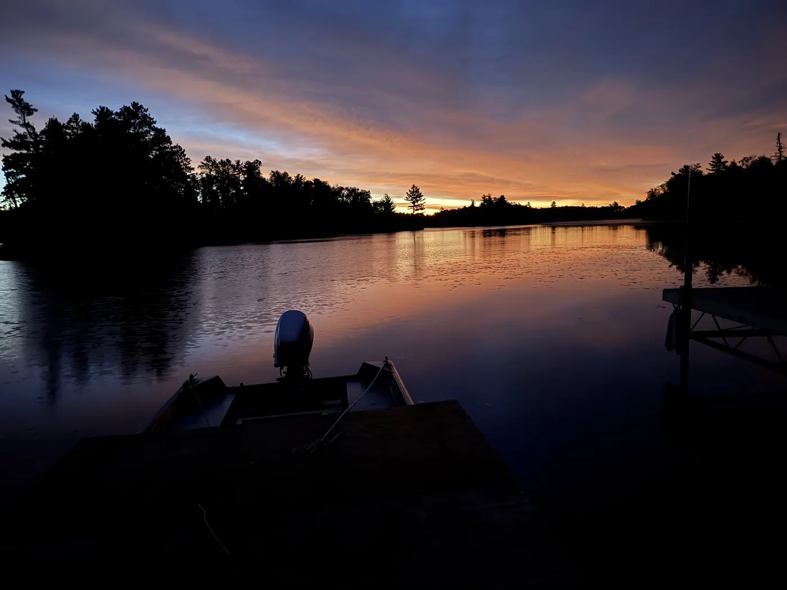
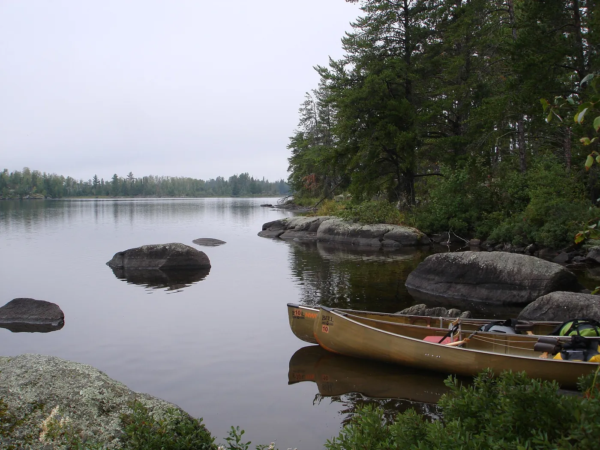
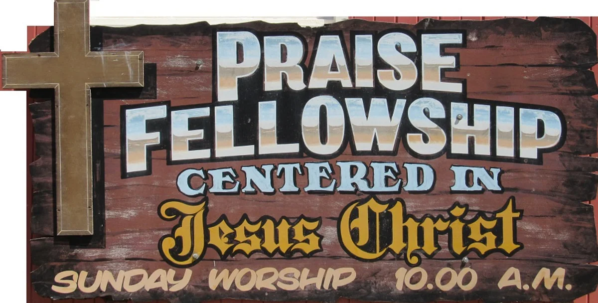
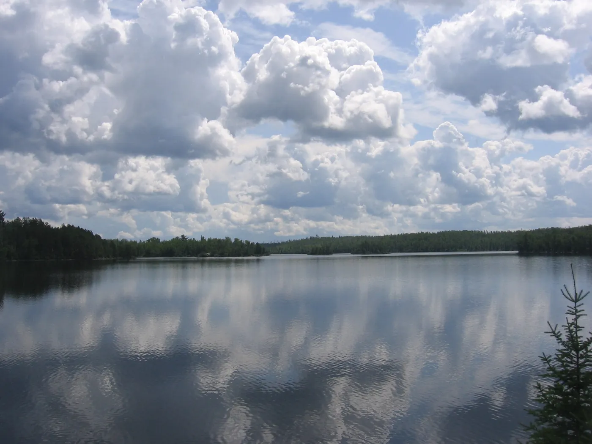
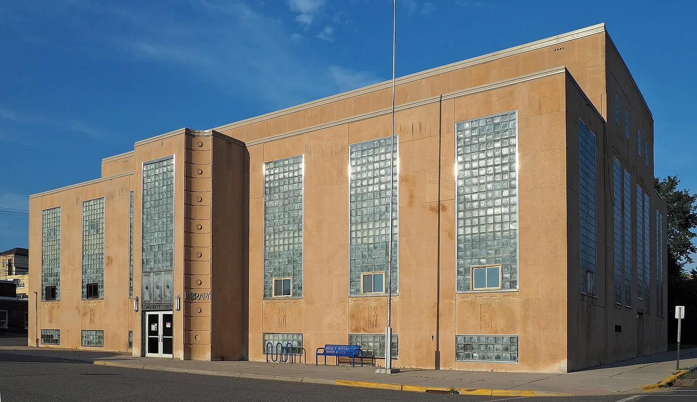
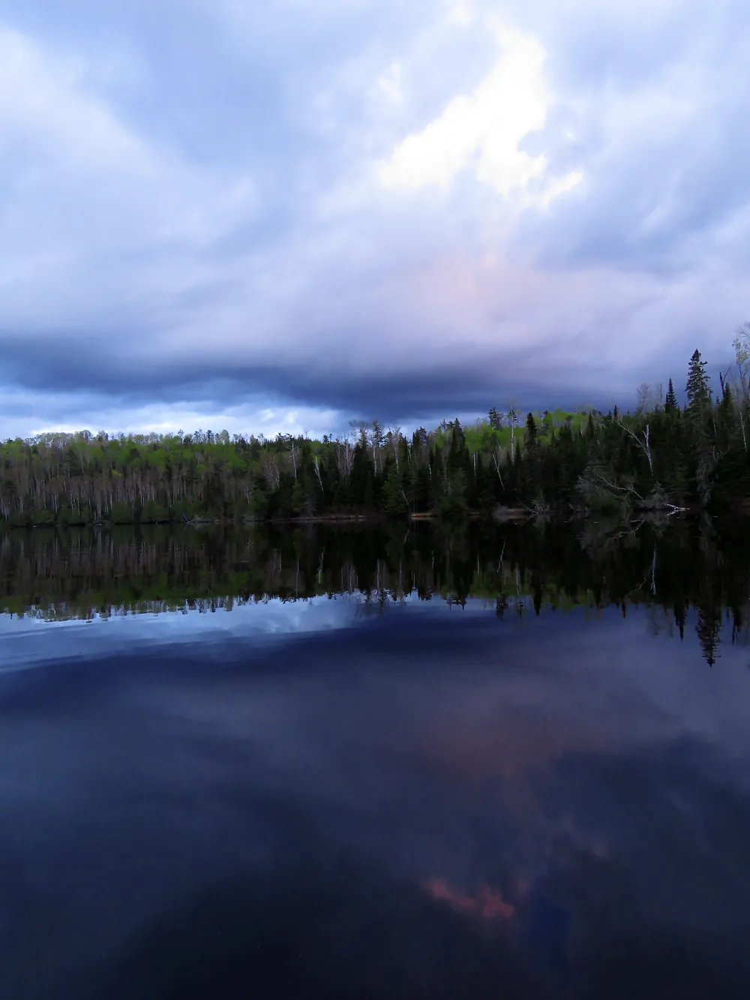

One God
There is only One God (Deuteronomy 4:35), that exists as a triune godhead of three distinct persons: God the Father, God the Son (Jesus Christ), and God the Holy Spirit (Matthew 28:19).

Ely, Minnesota
A small church, centered in Jesus Christ.
Sundays · 9:00 AM & 10:00 AM · Ely Community Center
“That if thou shalt confess with thy mouth the Lord Jesus, and shalt believe in thine heart that God hath raised him from the dead, thou shalt be saved. For with the heart man believeth unto righteousness; and with the mouth confession is made unto salvation.”
Romans 10:9-10 · King James Version
Who we are
We are a small church. We don't see that as something to fix. It means we know each other. We pray for each other by name. When someone is missing, we notice.
We live among the lakes and the north woods, and we see God's hand in them every day. On Sunday we gather to read the Bible and worship Jesus. We ask the Holy Spirit to be with us, and He is. That is what makes our time together good.
We love each other, and we feel blessed. If you come, you will be welcomed like family.
“For where two or three are gathered together in my name, there am I in the midst of them.”
Matthew 18:20 · KJV
Every Sunday
Please join our church family in studying God's Word and growing in our faith. Everyone is welcome!
We start with prayer, then open the Bible together in our Sunday morning Bible study class.
Pastor Robert (Bob) Barclay brings the message from God's Word. His current sermon series is “The Promises of God.”

“The heavens declare the glory of God; and the firmament sheweth his handywork.”
Psalm 19:1 · KJV
About us
Praise Fellowship, a non-denominational Christian church is centered in Jesus Christ and uses only the Bible to teach the difference between religion and Christianity. No traditions, no rituals, only the Word of God and His love is taught to lead and guide others into accepting Jesus Christ as their Lord and Savior, which then leads to living an abundant and purposeful life here and now, while giving the assurance of possessing eternal life in heaven after leaving this world. We want people to know that God is love and that Jesus came to save us not condemn us, and the only way to possessing eternal life is having a personal relationship with Jesus Christ.
There is only One God (Deuteronomy 4:35), that exists as a triune godhead of three distinct persons: God the Father, God the Son (Jesus Christ), and God the Holy Spirit (Matthew 28:19).
The Bible is the inerrant and inspired Word of God (2 Timothy 3:16-17).
Salvation is given as a free gift of God (Romans 6:23), it is obtained only by faith in Jesus Christ (Ephesians 2:8-9).
The indwelling Holy Spirit is given to a person at the moment they believe (Acts 2:38).

Pastor & Board
Praise Fellowship Church is pleased to announce Robert (Bob) Barclay as our pastor.
Pastor Barclay was born and raised in Austin, MN. He received Jesus as Lord and Savior February 1971. After a 20-year career in the printing business he attended Berean Bible College where he received his pastoral training. He received his license to preach in the Assemblies of God where he was an associate pastor and later, he pastored a non-denominational church.
Before becoming our pastor, Bob was active at Praise Fellowship for over 10 years. He did, and continues to, teach adult Sunday School, be a part of the worship team, sing and play special music and play the guitar and ukulele.
Bob married the love of his life Rose in 1972 and they raised 3 daughters: KayMarie, AmyJean and MaryLei.
Bob enjoys the outdoors, hunting, fishing and looking at the beauty of God's creation. He loves studying the Word of God, teaching and preaching.
Our church family
Folks come from Ely, Winton, Tower and Embarrass. Small enough that everyone knows your name.
Tower
Embarrass
Ely / Winton
Ely
Ely
Ely
Tower
Ely

“Be still, and know that I am God: I will be exalted among the heathen, I will be exalted in the earth.”
Psalm 46:10 · KJV
Ministries
Pastor Bob is willing to visit anyone in the hospital, nursing home, Carefree Living and their own home. Please call him and let him know who needs the visit and where they are. He is also able to do communion with them upon request.
If you feel led to become a part of any ministry at Praise Fellowship or start a ministry, please talk with Pastor Bob and he will work with you to do God's will in our church.
When studying God's Word, pray before you begin to read and allow God to guide you as you read each word. If you have any questions or need any guidance call Pastor Bob and he will help you find the answers in God's Word.
If you would like to meet with Pastor Bob, please call his cell phone, (218) 235-3700, and he will schedule a time and place with you.
Announcements

Visit us
We meet in the Blueberry Café Room of the Ely Community Center.

Jesus came to save us, not condemn us.
You are welcome here.